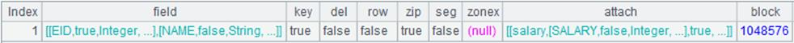

Description:
Attach the action of computing expression on each record to a cursor and return the original cursor.
Syntax:
cs.run (xi:Fi,¡)
Note:
The function attaches a computation to cursor cs, which will compute expression xi over each record in cursor cs and assign each result to Fi field, and returns the modified cursor cs. It supports multicursors.
This is a delayed function.
Parameter:
|
cs |
A cursor |
|
xi |
An expression |
|
Fi |
A field of cs |
Return value:
Cursor
Example:
|
|
A |
|
|
1 |
=connect("demo").cursor("select EID,NAME,SALARY,HIREDATE,0 as SUBSIDY from EMPLOYEE ") |
Return a cursor whose data is as follows:
|
|
2 |
=A1.run(age(HIREDATE):HIREDATE) |
Attach a computation to cursor A1, which will assign results of computing age(HIREDATE) to HIREDATE, and return the original cursor A1. |
|
3 |
=A1.run((HIREDATE * 2 * SALARY):SUBSIDY) |
Attach a computation to cursor A1, which will assign results of computing HIREDATE * 2 * SALARY to SUBSIDY, and return the original cursor A1. |
|
4 |
=A1.fetch() |
Fetch data from cursor A1 where both A2 and A3¡¯s computations are executed (it would be better to fetch data in batches when a large amount of data is involved):  |

Related function: